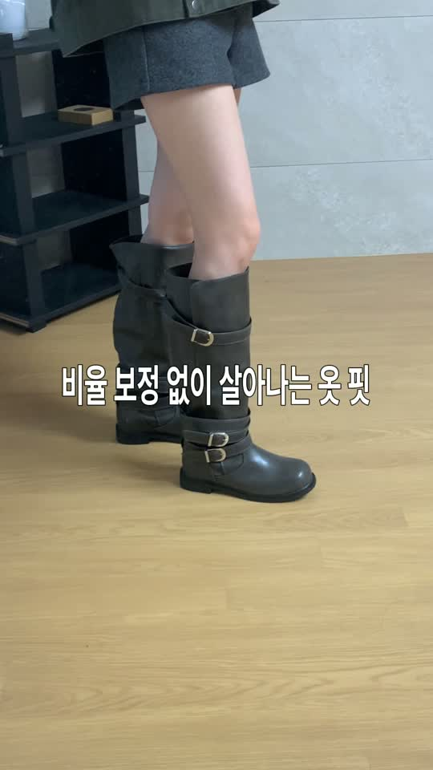

CHAAKAN · FOR HAEIN
해인님 페탈 · 무비
촬영 가이드
페탈의 전체 룩을 먼저, 무비의 키높이 포인트를 이어서 보여 주세요.
해인님, 보내주신 영상 잘 확인했습니다. 3초 부근의 카키 재킷과 짧은 하의에 페탈을 매치하신 코디가 특히 잘 어울려서, 이 룩을 영상의 첫 장면과 썸네일에 담아 주시면 좋겠습니다.
앞서 여러 룩으로 안내드렸는데, 이번에는 보여드리고 싶은 장면을 조금 더 구체적으로 정리했습니다. 페탈은 이 코디 한 벌로 전체 실루엣부터 보여 주시고, 무비는 아래 협업 크리에이터 예시를 참고해 자연스럽게 이어 주시면 감사하겠습니다.
 페탈 · 차콜굽 4cm · 첫 장면부터 충분히
페탈 · 차콜굽 4cm · 첫 장면부터 충분히전체 약 23~26초 기준입니다. 장면별 길이는 편집 흐름에 맞춰 조금씩 조절해 주세요. 자막 글꼴과 표현은 해인님 평소 영상의 느낌을 살려 주시면 됩니다.
3초에 나온 페탈 룩을, 얼굴 아래 혹은 복부 아래부터

오른쪽 코디 그대로, 얼굴 아래 혹은 복부 아래부터 부츠 끝까지 보이는 장면을 부탁드립니다. 썸네일은 왼쪽 ‘가을 바지 Top5’처럼 룩이 중앙에 크게 보이고, 제목이 한눈에 들어오는 느낌이면 좋겠습니다.
제목은 화면 위쪽 빈 공간에 두어 다리와 부츠를 가리지 않게 해 주세요.
썸네일 · 첫 장면 자막 예시가을 부츠 추천
페탈 · 굽 4cm
촬영얼굴 아래 혹은 복부 아래부터 다리와 부츠 끝까지 한 화면에 담아 주세요! 부츠와 해인님만의 매력이 더욱더 잘 보일 듯합니다!!!
영상은 선명하게 촬영 부탁드립니다. 얼굴 아래부터 담았을 때 부츠가 선명하게 보이지 않는다면, 복부 아래부터 촬영해 주셔도 좋습니다. 다리와 부츠의 실루엣이 더 잘 보여서 괜찮습니다!
가방은 잠시 옆에 두고, 페탈과 다리 라인이 이어져 보이도록 부탁드립니다. 첫 화면부터 위 제목을 넣어 주세요.
같은 룩으로, 앞에서 한 번 · 옆에서 한 번
페탈을 길게 편 상태로 정면 2초, 옆모습 2초를 부탁드립니다. 짧은 하의와 부츠 사이의 다리가 충분히 보이게, 카메라 위치와 거울까지의 거리를 유지해 주세요. 옆으로 살짝 돌아 주시면 부츠의 길이와 굽이 잘 보입니다.
자막 예시다리 라인이 더 길어 보여요
함께 넣어 주세요 · 페탈 랭킹 캡처 1장
아래 캡처를 이 장면에 1~2초 넣어 주세요. 페탈 상품과 1위 표시가 보이도록, 상체 쪽에 배치해 부츠를 가리지 않게 부탁드립니다.

함께 넣을 자막: ‘무신사 신상 부츠·워커 1위’
한 번 접어 보여 주고, 착용 구도가 잘 보이게
접는 모습페탈 윗부분을 손으로 접는 과정부터 접은 모습까지 한 번에 보여 주세요. 접기 전후 카메라는 같은 자리에 두시면 길이 차이가 더 잘 보입니다.
착용 구도이 장면도 부츠와 해인님의 실루엣이 잘 보이는 구도로 부탁드립니다. 멀리서 걷는 장면에서는 신발과 해인님이 충분히 잘 보이지 않을 수 있어, 보내주신 영상 1~2초에 나오는 착용 컷을 이 구간에 넣어 주시면 좋겠습니다!
해당 컷처럼 다리와 부츠가 화면에 충분히 크게 보이면 좋겠습니다. 이미 촬영해 두신 원본 컷을 활용해 주세요.
자막 예시한 켤레로 두 가지 길이로 신을 수 있어요
무비는 예시처럼, 높이와 착용 모습
무비는 위 영상의 처음 3초 비교 장면과 8초 이후 착용 구도를 참고해 주세요. 코디는 해인님께서 편하게 골라 주셔도 좋습니다. 부츠 윗부분부터 발끝까지 보이는 구도로 부탁드립니다.
비교한쪽은 양말, 한쪽은 무비를 신고 발을 나란히 두어 잠깐 멈춰 주세요. 이어서 양쪽을 신은 모습을 보여 주시면 자연스럽습니다.
착용주름과 굽을 가까이 한 번 보여 주고, 정면이나 옆모습으로 마무리해 주세요. 예시처럼 여러 벌을 준비하실 필요는 없습니다.
제품이 바뀔 때 넣을 자막 예시코코아 컬러로 포인트 주기 좋아요
페탈은 4cm, 무비는 7.5cm로 각각 표시해 주세요. 예시 영상 속 할인 안내나 랭킹 문구는 가져오지 않고, 촬영 구도만 참고해 주시면 됩니다.
페탈 전체 룩으로 마무리, 댓글 안내
첫 장면의 카키 재킷 + 짧은 하의 + 페탈 차콜 룩을 다시 3초 정도 보여 주세요. 얼굴 아래 혹은 복부 아래부터 부츠 끝까지 보이는 모습 위에 댓글 안내를 부탁드립니다.
마지막 자막20% 할인 링크 보내드릴게요
할인코드는 영상에 직접 넣지 않고, 자동 DM의 링크와 안내에 맞춰 주세요.
추가 촬영 전, 짧게 확인 부탁드립니다
페탈 전체 룩의 구도가 보이는 사진이나 짧은 영상 한 컷을 먼저 보내 주시면 확인하고 답드리겠습니다. 나머지 장면은 위 순서대로 이어 주시면 됩니다.
편집본과 캡션을 함께 보내 주시고, 확인 답변을 받은 뒤 게시 부탁드립니다.